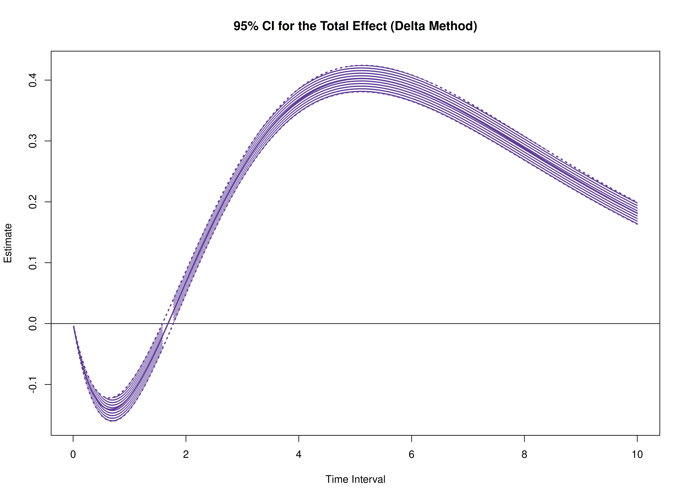
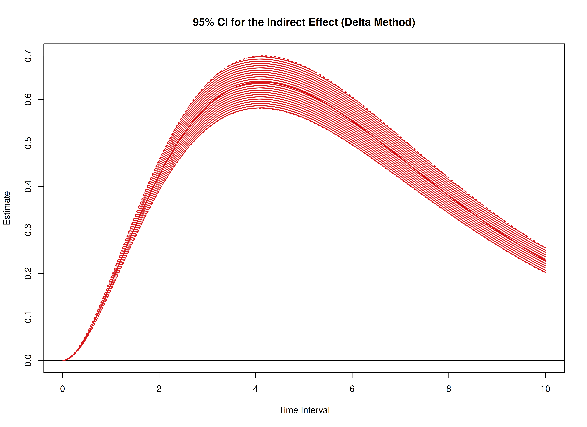
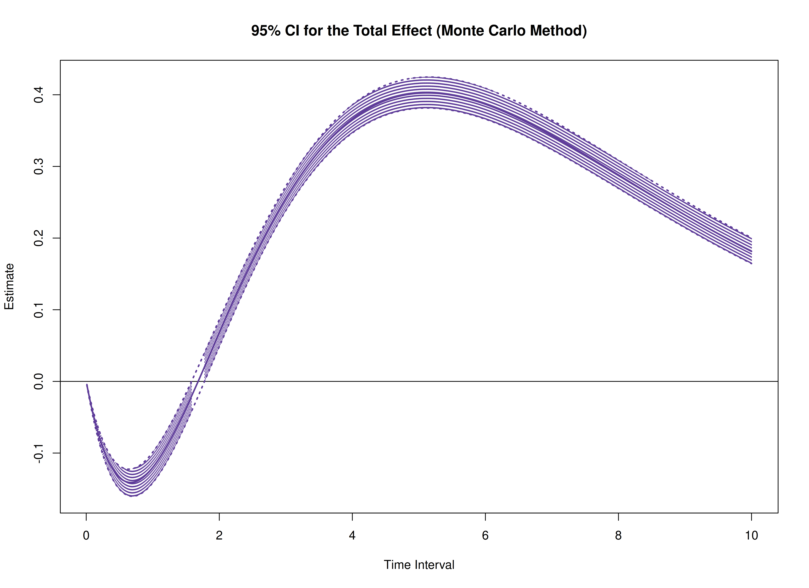
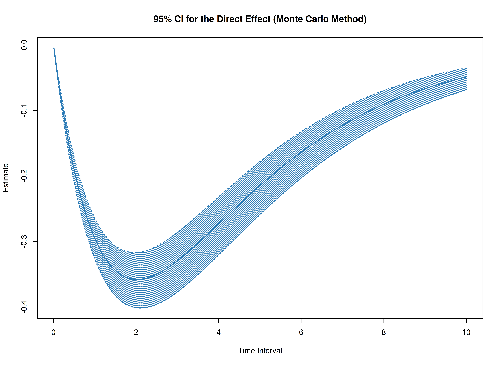

Standardized Total, Direct, and Indirect Effects in Continuous-Time Mediation Model
Ivan Jacob Agaloos Pesigan
2024-12-30
Source:vignettes/med-std.Rmd
med-std.RmdThe cTMed package offers tools for estimating and
quantifying uncertainty in standardized total, direct, and indirect
effects within continuous-time mediation models across various time
intervals using the delta and Monte Carlo methods. To implement these
approaches, estimates from a continuous-time vector autoregressive
(CT-VAR) model are required, particularly the drift matrix, and process
noise covariance matrix with the corresponding sampling
variance-covariance matrix. For guidance on fitting CT-VAR models using
the dynr or OpenMx packages, refer to Fit
the Continuous-Time Vector Autoregressive Model Using the dynr
Package and Fit
the Continuous-Time Vector Autoregressive Model Using the OpenMx
Package, respectively.
# Drift matrix
phi <- matrix(
data = c(
-0.357, 0.771, -0.450,
0.0, -0.511, 0.729,
0, 0, -0.693
),
nrow = 3
)
colnames(phi) <- rownames(phi) <- c("x", "m", "y")
# Process noise covariance matrix
sigma <- matrix(
data = c(
0.24455556, 0.02201587, -0.05004762,
0.02201587, 0.07067800, 0.01539456,
-0.05004762, 0.01539456, 0.07553061
),
nrow = 3
)
# Sampling variance-covariance matrix of vec(phi) and vech(sigma)
vcov_theta <- matrix(
data = c(
0.00843, 0.00040, -0.00151, -0.00600, -0.00033,
0.00110, 0.00324, 0.00020, -0.00061, -0.00115,
0.00011, 0.00015, 0.00001, -0.00002, -0.00001,
0.00040, 0.00374, 0.00016, -0.00022, -0.00273,
-0.00016, 0.00009, 0.00150, 0.00012, -0.00010,
-0.00026, 0.00002, 0.00012, 0.00004, -0.00001,
-0.00151, 0.00016, 0.00389, 0.00103, -0.00007,
-0.00283, -0.00050, 0.00000, 0.00156, 0.00021,
-0.00005, -0.00031, 0.00001, 0.00007, 0.00006,
-0.00600, -0.00022, 0.00103, 0.00644, 0.00031,
-0.00119, -0.00374, -0.00021, 0.00070, 0.00064,
-0.00015, -0.00005, 0.00000, 0.00003, -0.00001,
-0.00033, -0.00273, -0.00007, 0.00031, 0.00287,
0.00013, -0.00014, -0.00170, -0.00012, 0.00006,
0.00014, -0.00001, -0.00015, 0.00000, 0.00001,
0.00110, -0.00016, -0.00283, -0.00119, 0.00013,
0.00297, 0.00063, -0.00004, -0.00177, -0.00013,
0.00005, 0.00017, -0.00002, -0.00008, 0.00001,
0.00324, 0.00009, -0.00050, -0.00374, -0.00014,
0.00063, 0.00495, 0.00024, -0.00093, -0.00020,
0.00006, -0.00010, 0.00000, -0.00001, 0.00004,
0.00020, 0.00150, 0.00000, -0.00021, -0.00170,
-0.00004, 0.00024, 0.00214, 0.00012, -0.00002,
-0.00004, 0.00000, 0.00006, -0.00005, -0.00001,
-0.00061, 0.00012, 0.00156, 0.00070, -0.00012,
-0.00177, -0.00093, 0.00012, 0.00223, 0.00004,
-0.00002, -0.00003, 0.00001, 0.00003, -0.00013,
-0.00115, -0.00010, 0.00021, 0.00064, 0.00006,
-0.00013, -0.00020, -0.00002, 0.00004, 0.00057,
0.00001, -0.00009, 0.00000, 0.00000, 0.00001,
0.00011, -0.00026, -0.00005, -0.00015, 0.00014,
0.00005, 0.00006, -0.00004, -0.00002, 0.00001,
0.00012, 0.00001, 0.00000, -0.00002, 0.00000,
0.00015, 0.00002, -0.00031, -0.00005, -0.00001,
0.00017, -0.00010, 0.00000, -0.00003, -0.00009,
0.00001, 0.00014, 0.00000, 0.00000, -0.00005,
0.00001, 0.00012, 0.00001, 0.00000, -0.00015,
-0.00002, 0.00000, 0.00006, 0.00001, 0.00000,
0.00000, 0.00000, 0.00010, 0.00001, 0.00000,
-0.00002, 0.00004, 0.00007, 0.00003, 0.00000,
-0.00008, -0.00001, -0.00005, 0.00003, 0.00000,
-0.00002, 0.00000, 0.00001, 0.00005, 0.00001,
-0.00001, -0.00001, 0.00006, -0.00001, 0.00001,
0.00001, 0.00004, -0.00001, -0.00013, 0.00001,
0.00000, -0.00005, 0.00000, 0.00001, 0.00012
),
nrow = 15
)In this example, we aim to calculate the total, direct, and indirect
effects of x on y, mediated through
m, over time intervals ranging from 0 to 10.
# time intervals
delta_t <- seq(from = 0, to = 10, length.out = 1000)Delta Method
library(cTMed)
delta <- DeltaMedStd(
phi = phi,
sigma = sigma,
vcov_theta = vcov_theta,
delta_t = delta_t,
from = "x",
to = "y",
med = "m",
ncores = parallel::detectCores() # use multiple cores
)
plot(delta)
Monte Carlo Method
mc <- MCMedStd(
phi = phi,
sigma = sigma,
vcov_theta = vcov_theta,
delta_t = delta_t,
from = "x",
to = "y",
med = "m",
R = 20000L,
ncores = parallel::detectCores() # use multiple cores
)
plot(mc)